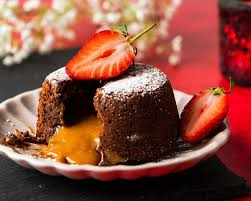

Galaxy Cupcakes🌌🧁

Lava cake is a rich and decadent chocolate dessert
with a gooey, molten center. It's perfect for chocolate
lovers and a great treat for special occasions! 😍🔥
Ingredients
- ½ cup (115g) unsalted butter
- 4 oz (113g) dark chocolate (chopped)
- ½ cup unsalted butter (softened)
- 2 eggs
- 2 egg yolks
- ¼ cup (50g) granulated sugar
- 1 tsp vanilla extract
- ¼ cup (30g) all-purpose flour
- Pinch of salt
- Butter and cocoa powder (for greasing ramekins)
Instructions
- Preheat Oven to 425°F (220°C). Grease 4 ramekins with butter and dust them with cocoa powder.
- Melt Chocolate & Butter: In a heatproof bowl, melt the butter and chopped dark chocolate together (microwave in 20-second bursts or use a double boiler). Stir until smooth.
- Whisk Eggs & Sugar: In a separate bowl, whisk eggs, egg yolks, and sugar until light and slightly frothy. Add vanilla extract.
- Combine: Slowly pour the melted chocolate into the egg mixture while whisking.
- Add Dry Ingredients: Sift in the flour and salt, then gently fold everything together until smooth.
- Fill Ramekins: Divide the batter evenly into the prepared ramekins, filling about ¾ full.
- Bake: Bake for 10-12 minutes until the edges are set but the center is still soft.
- Cool & Serve: Let the cakes rest for 1 minute, then carefully invert them onto plates. Serve immediately with ice cream or berries! 🍓🍦
>
Lava cake is a simple yet indulgent dessert that’s
perfect for satisfying
chocolate cravings. With its rich,
molten center and soft, cakey exterior, it’s a
guaranteed crowd-pleaser. Whether served with ice cream,
whipped cream, or fresh berries, this warm treat is sure to
impress! Enjoy your homemade lava cake and share the joy
with friends and family! 😊🍰✨